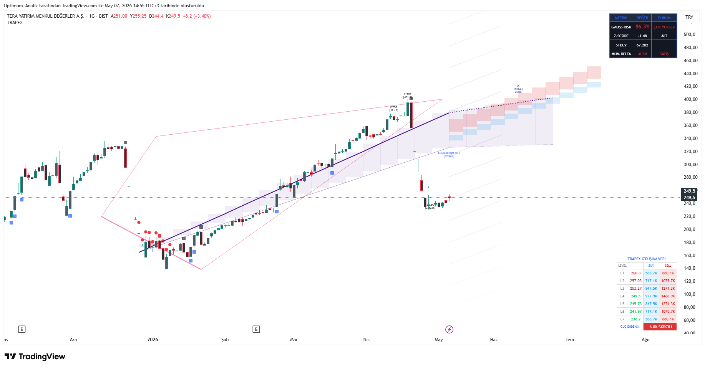
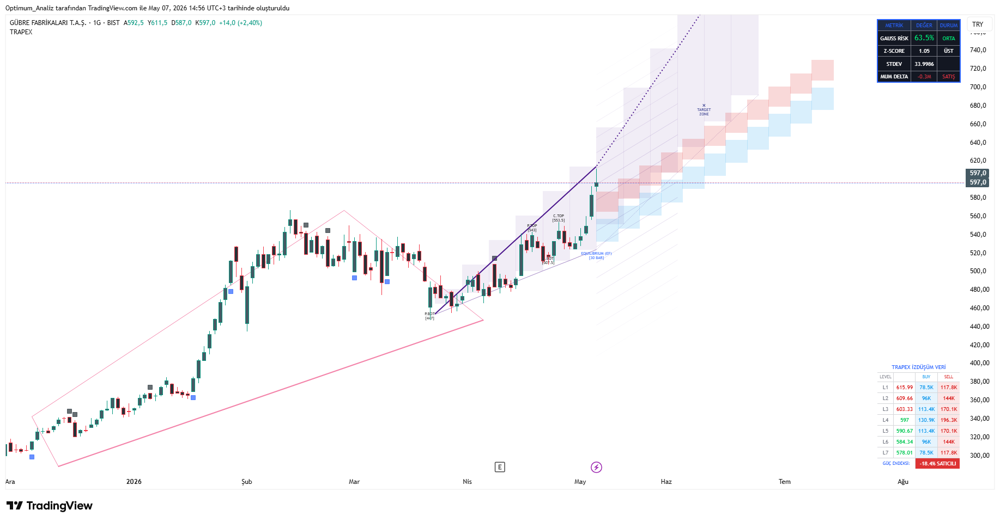

← Ana Sayfaya Dön
Genel Bakış
TRAPEX-GEO-T v6, geometrik ağırlık merkezi (ICS), dinamik hibrit huni ve gelişmiş Wyckoff/VSA entegrasyonu ile güçlendirilmiş profesyonel bir Trap & Reversal Detection sistemidir.
Regresyon tabanlı geometrik trend çizgileri, hacim ağırlıklı dinamik huni ve gerçek zamanlı BIST tarayıcı ile tam entegre çalışır.
Yeni Versiyon Özellikleri (v6)
- 🔸 Geometrik Ağırlık Merkezi Trend Çizgileri (ICS) — 35 barlık merkez fiyat regresyonu + açı göstergesi
- 🔸 Hibrit Parabolik Huni Motoru — Volatiliteye ve hacme göre dinamik bükülen asimetrik kanal
- 🔸 Dinamik Standart Sapma Hedefleri — Sağ tarafa projeksiyonlu σ hedefleri
- 🔸 Gelişmiş Intrabar Hacim Analizi (1 saniye)
- 🔸 Tam Wyckoff Spring + Effort vs Result + Absorption Tespiti
- 🔸 "Yay" (Release) Motoru — Isınan Yay + Tetiklenme Görselleştirmesi
- 🔸 Kurumsal Balina Maliyet Tahmincisi (Whale Cost Tracker)
- 🔸 Termal Akümülâsyon Skoru (5 kademeli ısı matrisi)
- 🔸 Gerçek Zamanlı BIST 35 Hisse Tarayıcı (Spring + Yay Durumu)
- 🔸 Gelişmiş Mum Formasyon Motoru (Marubozu, Yutan, 3 Asker, Çekiç vb.)
TRAPEX-GEO-T v6’nın En Güçlü Yönleri:
• Geometrik ICS Trend Çizgileri
• Hacim ağırlıklı dinamik hibrit huni
• Kurumsal Isı Skoru + Balina Maliyeti Takibi
• 35 Hisse BIST Tarayıcı Paneli
Kullanım Stratejisi (Long / Short)
✅ Long (Alış) Setup
- Fiyat Geometrik Trend alt bandına veya Huni alt sınırına yaklaşıyor
- Spring veya Çekiç formasyonu + Pozitif Delta
- Termal Skor yükseliyor ([■■■□□] ve üzeri)
- Balina Maliyeti altına sarkma + Wyckoff Spring
- Giriş: Spring mumu kapanışına veya huni orta banda
✅ Short (Satış) Setup
- Fiyat Huni üst bandına çarpıyor
- Yüksek negatif imbalance + Bear Absorption
- Geometrik Trend açısı negatif ve düşüyor
Önerilen Ayarlar
- Manuel Regresyon Periyodu → 89 (en optimum)
- Huni Kanal Genişliği (rho_mult) → 2.4 - 2.6
- VSA Emilim Hassasiyeti → 1.5
- Baskı Hassasiyeti → 2.0
- Geometrik Trend Çizgileri → Açık
- Sapma Hedeflerini Göster → Açık
En İyi Kullanım Koşulları
- Timeframe: 1G (en güçlü), 4H ve 2H
- Yüksek likiditeli BIST hisseleri
- Akümülasyon / Dağıtım fazlarında özellikle güçlü
- Volatilite artışı dönemlerinde mükemmel performans
TRAPEX-GEO-T Örnek Görseller
Geometrik Trend + Hibrit Huni

Geometrik ICS Trend + Dinamik Hibrit Huni
Tam Ekran + BIST Tarayıcı Paneli

Tam Ekran Görünüm + Sağ Panel + BIST Tarayıcı
Erişim ve Destek
TRAPEX-GEO-T sadece Premium X abonelere özel olarak paylaşılmaktadır.
Sorularınız ve güncellemeler için:
@Optimum__Trader